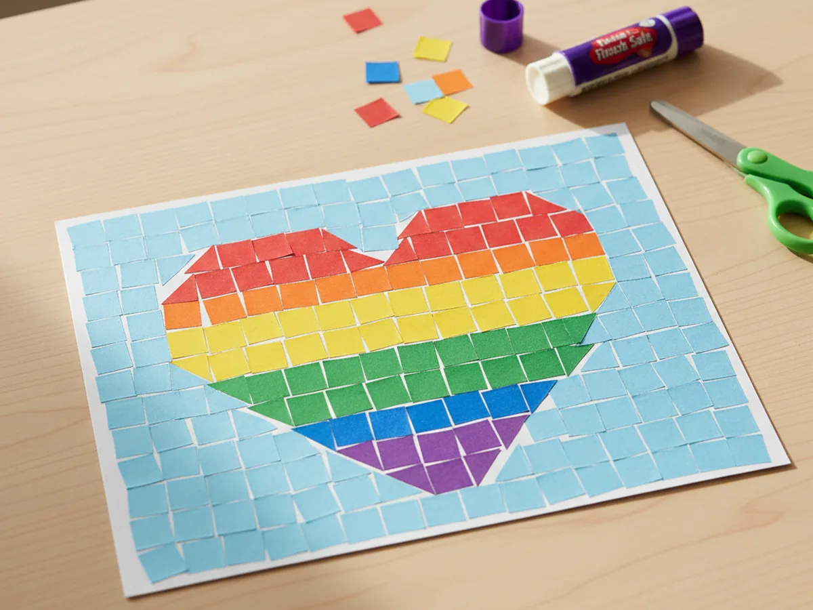
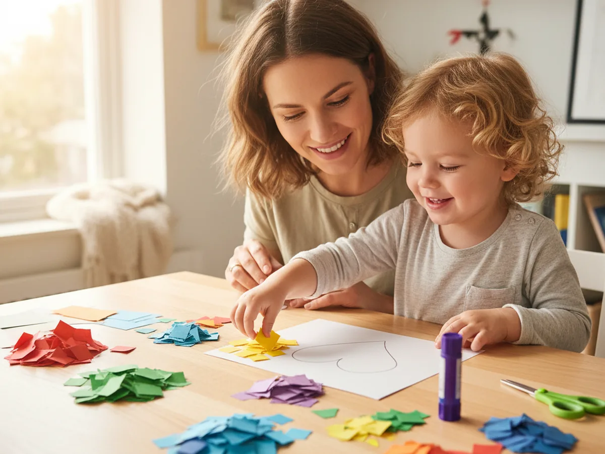
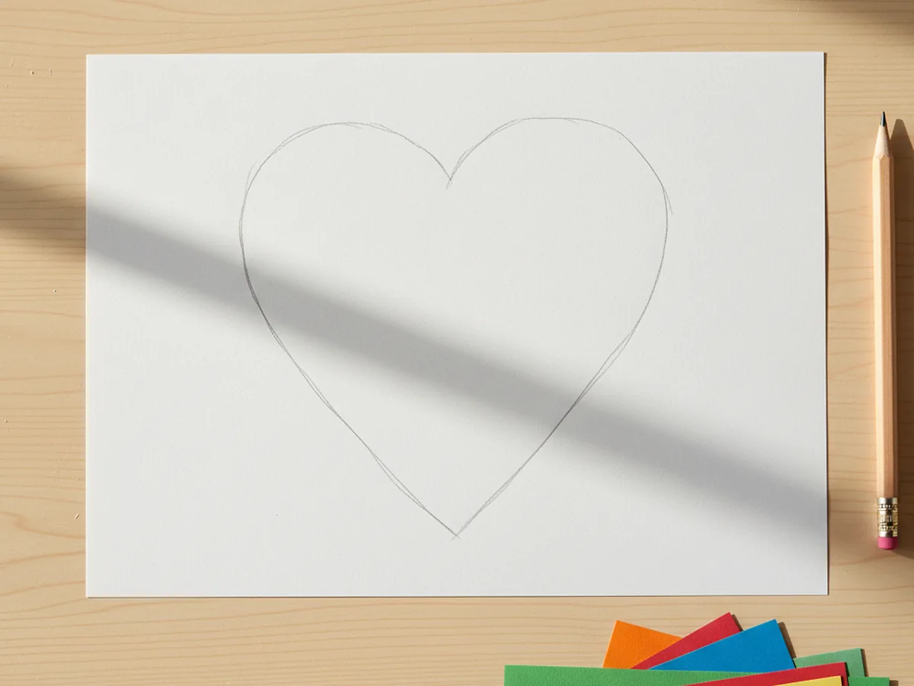
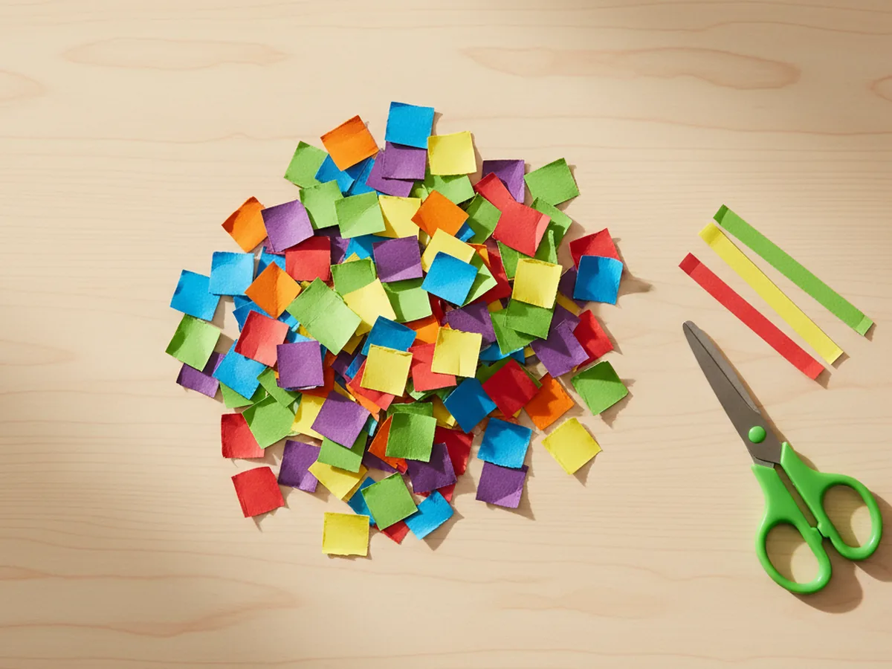
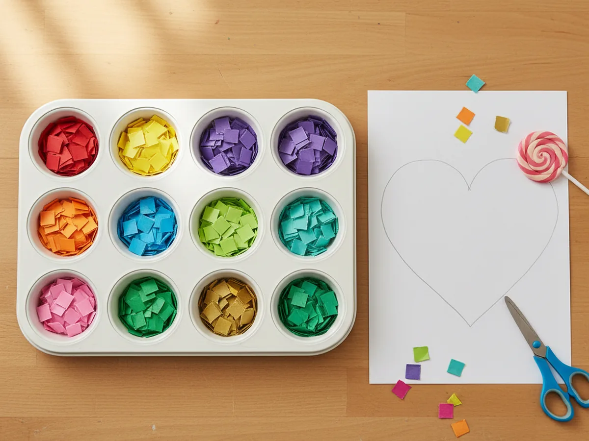
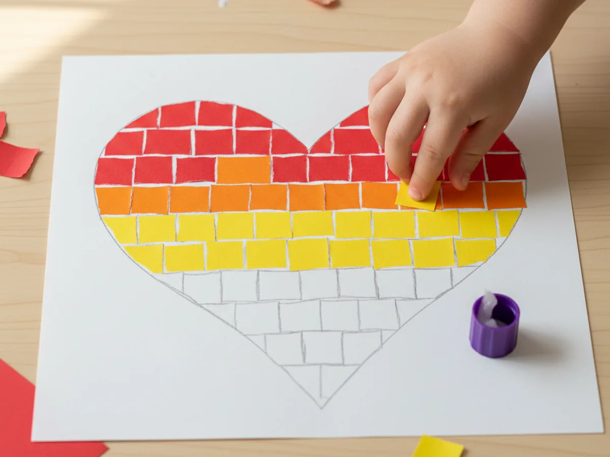
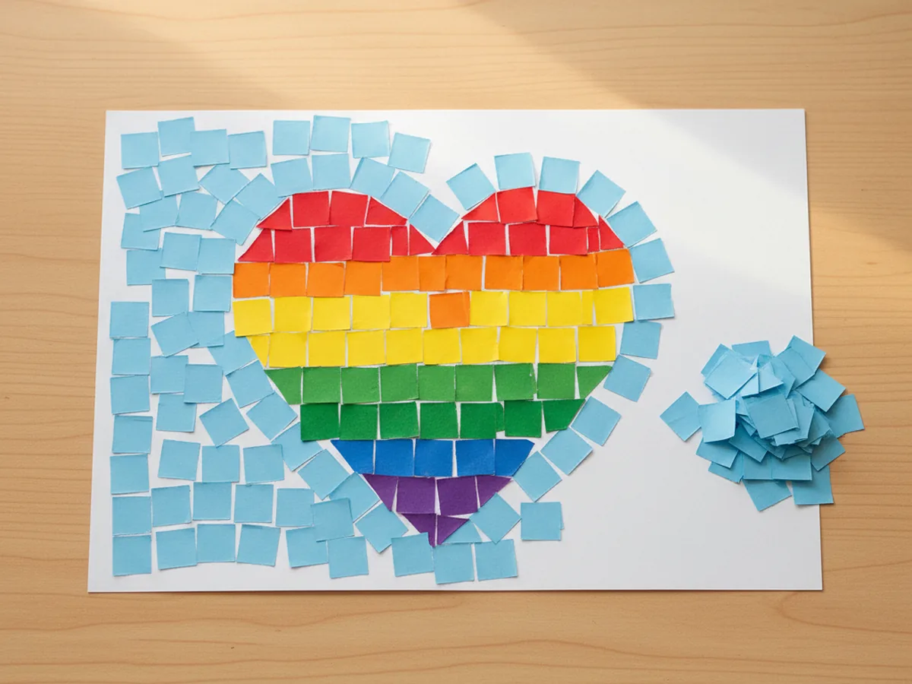
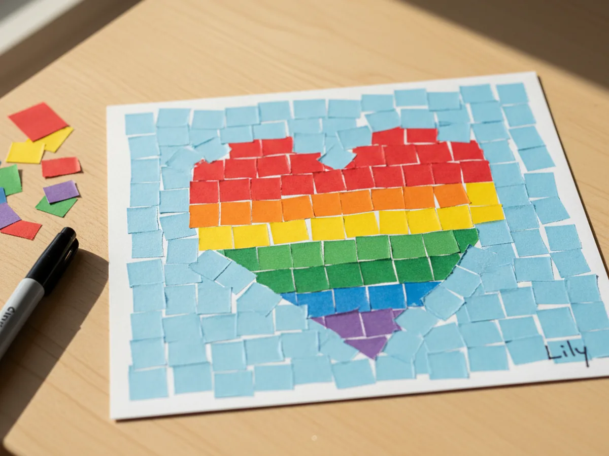

If you are looking for a simple project that keeps little hands busy and gives you a beautiful, display-worthy result, this paper mosaic craft is one of the sweetest options to try. 🎨 All it takes is a few sheets of colored construction paper, a glue stick, and a pair of child-safe scissors. There is no paint to clean up, no special skills needed, and the finished mosaic feels surprisingly artistic for something so easy to make.
The magic of a paper mosaic craft for kids is in the rhythm of it. Once your child gets going, placing one little square at a time, the shape slowly comes to life right in front of their eyes. It is calming, satisfying, and the kind of project that holds a young child's attention without you having to manage every second of it.
Why Kids Love This Craft
There is something deeply satisfying about a paper mosaic for young children. Each colored square is a tiny win. Pick a piece, glue it down, pick the next one, and the picture grows piece by piece. That slow, visible progress is exactly the kind of feedback little ones love, and it keeps them engaged from beginning to end without overwhelming them.
This easy paper mosaic craft also gives kids lots of gentle fine motor practice. Pinching small squares, placing them carefully, and dabbing glue all help build hand control in a way that feels like play rather than practice. Choosing colors, deciding where each piece goes, and seeing patterns appear gives children real creative ownership too. They are making real decisions, and the result reflects their choices.
Best of all, the finished result looks genuinely beautiful. Mosaics have that quilt-like, stained-glass feel that makes children feel proud of what they made. Sticking it on the fridge, framing it on the wall, or gifting it to a grandparent are all things they will want to do the moment they finish. 💛

What You'll Need
Here is everything you need to set up this simple paper mosaic craft at home. Lay everything out before you start so the activity flows smoothly and your child can dive right in.
- Crayola Construction Paper (240 sheets, 12 assorted colors), the heart of the whole craft; you will need several colors for the mosaic tiles.
- Neenah Bright White Cardstock (250 sheets, 8.5 x 11), sturdy base for the mosaic so the finished piece does not curl or buckle.
- Elmer's Disappearing Purple Glue Sticks (30 pack), washable and easy for small hands to manage without making a mess.
- Fiskars 5-Inch Pointed-Tip Scissors for Kids, perfect for ages 4 and up; use round-tip safety scissors for younger children.
- Crayola Broad Line Markers (10 classic colors), for sketching the outline and adding final details once the glue is dry.
- A pencil, for lightly tracing the mosaic outline before you start gluing.
- A muffin tin or small bowls, optional, for sorting the cut paper squares by color.
Step-by-Step Instructions
This paper mosaic craft step by step is wonderfully easy to follow, even on the very first try. Work through each step together and let your child take the lead wherever they feel confident.
Step 1: Draw the Outline Shape
Start by deciding what shape your mosaic will show. Simple, bold shapes work best for a first paper mosaic craft, so think along the lines of a heart, a flower, a butterfly, a fish, or a rainbow. Take a sheet of white cardstock and use a pencil to lightly draw the outline of your chosen shape, keeping it nice and big so there is plenty of room inside for the colored tiles.
For very young children, you can draw the outline yourself and then let them take over for the rest of the project. Older children might enjoy choosing their own shape and sketching it out independently, which is a lovely way to give them creative control from the very beginning.

Step 2: Cut the Paper into Small Squares
Take a few sheets of colored construction paper and cut each one into long strips about half an inch wide. Then snip those strips into small squares, roughly the size of a fingernail. They do not need to be perfectly identical. Slightly uneven edges actually look beautiful in the finished mosaic and give it that authentic handmade charm.
Pick four or five colors to keep things simple, or grab the whole rainbow if your child wants a riot of color. Either way works. If your child is too young to cut on their own, do the cutting yourself ahead of time so they can dive straight into the fun gluing part.

Step 3: Sort the Squares by Color
This is a small step that makes a big difference. Sort the cut squares into separate piles by color, either on the table or in the cups of a muffin tin. Sorting the pieces first means your child can grab the right color quickly during the gluing step, which keeps the activity calm and flowing instead of frustrating.
This is also a sweet little extra moment of play for younger kids. Many toddlers genuinely enjoy sorting by color, so let them take the lead here if they want. It gives them a chance to feel useful and in charge.

Step 4: Glue the Squares Inside the Outline
Now for the fun part. Take the glue stick and apply a thin layer of glue to a small section inside the pencil outline. Then have your child press the colored squares onto the glue one at a time, leaving a tiny gap of white between each one. Those small gaps are what create that classic mosaic look, so encourage your child to space the pieces gently rather than pushing them tightly together.
Work in small sections so the glue does not dry before the squares go down. Your child can pick any color order they like, mix the colors randomly, or follow a pattern like a rainbow. There is no wrong way to do it, and that creative freedom is a huge part of what makes this paper mosaic craft for kids so satisfying. 🌈

Step 5: Fill the Background (Optional)
Once the inside of the shape is fully covered, you can stop there and have a finished mosaic that pops against the white cardstock, or you can keep going and fill in the background too. Filling the background in one or two contrasting colors makes the main shape really stand out and gives the piece a more finished, framed look.
If you choose to do this, pick a calm background color like light blue, soft pink, or pale yellow so it does not overpower the main image. Apply glue to small sections at a time and press the squares down with the same small gaps as before.

Step 6: Add Final Details and Display
Once the glue is fully dry, give the mosaic a final touch with a black marker if you like. You can lightly trace around the main shape to give it a clean outline, or use the markers to add small details like dots, swirls, or a tiny signature in the corner. Your child can write their name, the date, or anything else they want to add as a personal touch.
Then comes the best part. Pin the finished paper mosaic on the fridge, slide it into a simple frame, or tape it to a bedroom wall. Seeing their artwork displayed is one of the proudest moments a child can have, and it turns a thirty-minute activity into a lasting memory.

Variations to Try
Torn Paper Mosaic: Skip the scissors entirely and have your child tear the construction paper into small pieces with their fingers. This is a wonderful version for toddlers and younger children who are not ready for cutting yet. The torn edges give the mosaic an extra cozy, textured look.
Seasonal Mosaic Picture: Use seasonal shapes and matching colors to turn the paper mosaic craft into a holiday or seasonal decoration. Try a green Christmas tree with red and gold tiles, a pumpkin in oranges and yellows for fall, or a colorful Easter egg in spring pastels.
Initial or Name Mosaic: Draw the first letter of your child's name in big block style, then fill it in with mosaic squares. It makes a sweet personalized piece for a bedroom door, and older kids especially love making something with their own initial.
Final Thoughts
This paper mosaic craft is one of those rare activities that is genuinely calming for both the mom and the child. There is no rush, no fancy technique, and no pressure to make it perfect. Just a quiet thirty minutes of choosing pretty colors and watching a beautiful picture come together piece by piece. ✨
If your little one makes their own mosaic, I would love to see it. Pin this article on Pinterest so other families can find it too, and have fun crafting together!
More Crafts You'll Love
If your child enjoyed making a paper mosaic craft, these other colorful paper projects are just as easy and just as fun: